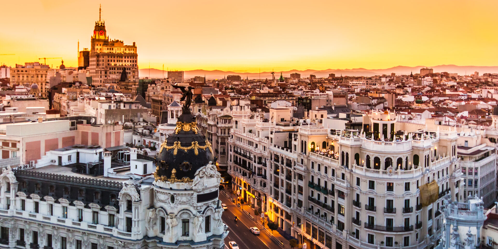
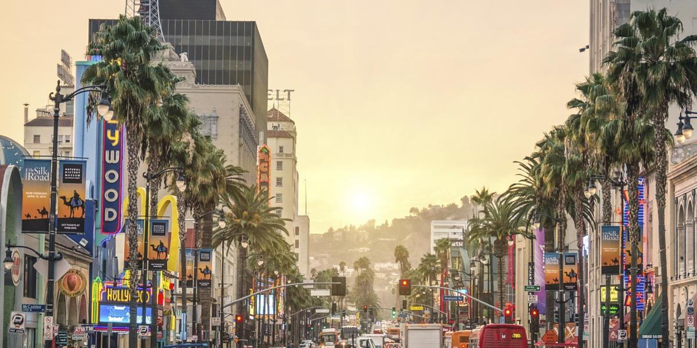

Viaje a Madrid
Madrid es un municipio y una ciudad de España. La localidad, con categoría histórica
de
villa, es la capital del Estado10 y de la Comunidad de Madrid. En su término municipal, el más
poblado
de España, viven 3 334 730 personas empadronadas, según el INE de 2020. El área metropolitana
asociada
tiene una población de 6 779 888 habitantes, la segunda de la Unión Europea, según la fuente, tras
la de
París, y en otras fuentes detrás también de la Región del Ruhr, así como la segunda ciudad más
poblada
de la Unión Europea, por detrás de Berlín.

Viaje a Los Ángeles
Los Ángeles es una ciudad en rápido crecimiento del Sur de California y es el núcleo
de
la industria televisiva y cinematográfica del país. Cerca de su icónico letrero de Hollywood,
estudios
como Paramount Pictures, Universal y Warner Brothers ofrecen recorridos tras bambalinas. En
Hollywood
Boulevard, el Teatro Chino de Grauman luce las huellas de pies y manos de celebridades, el Paseo de
la
Fama conmemora a miles de estrellas y los vendedores ofrecen mapas de las casas de los famosos.

Viaje a París
París, la capital de Francia, es una importante ciudad europea y un centro mundial
del
arte, la moda, la gastronomía y la cultura. Su paisaje urbano del siglo XIX está entrecruzado por
amplios bulevares y el río Sena. Aparte de estos hitos, como la Torre Eiffel y la catedral gótica de
Notre Dame del siglo XII, la ciudad es famosa por su cultura del café y las tiendas de moda de
diseñador
a lo largo de la calle Rue du Faubourg Saint-Honoré.